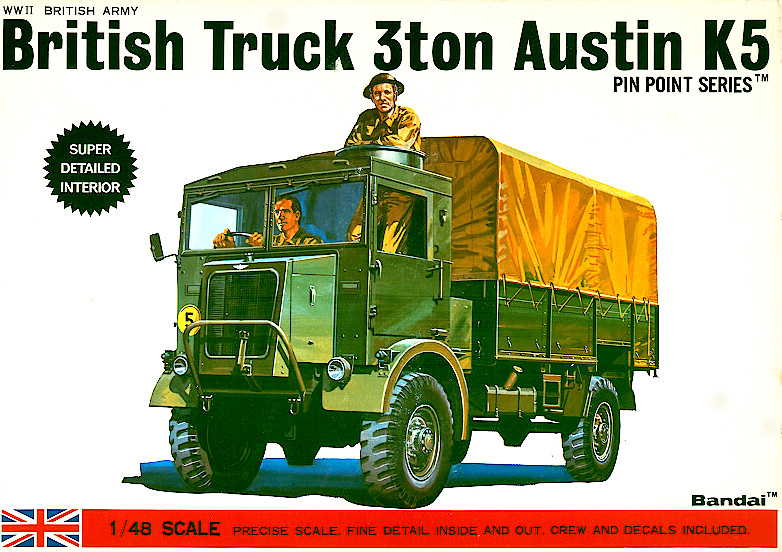
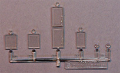
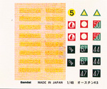

{kind=link}
{kind=link}
{kind=link}
{kind=link}
{kind=link}
{kind=link}
{kind=link}
{kind=link}
{kind=link}
{kind=link}
{kind=link}
{kind=link}
{kind=link}

Bandai 1/48 Austin 3 ton K5

Kit #8361 Collector’s Market Value $59.64
Images and text Copyright © 2009 by Matt Swan
Developmental Background
The Austin Motor Company was founded in 1905 by Herbert Austin, the first Baron Austin of Longbridge. The first car they produced was a conventional 5-litre four-cylinder model with chain drive. During World War I the company expanded considerably after obtaining several government contacts building everything from artillery to aircraft including the S.E 5a and by the end of that war was employing over 22,000 people. After the war the company fell on hard times and experienced a financial restructuring in 1922 that allowed them to survive the depression years. Before the Second World War flared up they were manufacturing cars in conjunction with BMW, Datsun and Bantam in the United States.
During WWII they were once again manufacturing a wide variety of military equipment that included Lancaster Bombers for 617 Squadron better known as Dam Busters and a range of General Service trucks under the designations K2 through K6. Many of these trucks were also shipped to Russia for service there. The K5 was initially manufactured with an open body and cab for carrying the QF 6 pounder anti-tank gun in North Africa. A more common closed cab version was used heavily for salvage and rescue work but all versions were referred to as “screamers” by the troops due to their very noisy transfer cases. After the war the company merged with Morris in 1952 and was later absorbed by British Leyland Motor Corporation. 1994 saw the last production vehicle to carry the Austin name and the rights then changed hands several times being owned at one point by BMW and currently is in the possession of Nanjing who is considering reviving the name to sell standard cars in the European market.
The Kit
In the early to mid 1970s when Bandai was releasing these highly detailed 1/48 armor kits they were way out in front of the rest of the model producing world. Even by today’s standards these kit rate at least a very good – 45 years after release. That’s pretty impressive. In the 1980s Bandai did another release of this particular kit then leased the molds to FROG/Fuman in the 1990s and this was their undoing. The molds were handled very badly and ultimately had to be scrapped without any release of product and so ended the life of the 1/48 Bandai K-5. Not only was this kit well detailed with a complete engine and crew but measured out almost spot on to the actual truck dimensions.
This kit is actually closer to two kits in one package, first we have the K-5 kit then we have the figures which was seen previously as Bandai kit #23. The truck kit consists of four sprues of olive drab injection molded pieces that are all very clean with no flash or sink marks and only minimal mold separation seams. The outer detail is good and the general parts fit is tight. There is not much internal cab detail and the canvas effects on the bed  cover are not that great. The engine, while a complete piece to place under the hood does not display a very high level of detail but definitely gives the modeler a good starting point to add some scratch built detail. Suspension and drive train detail is good and the tire/wheels, while cast as single solid pieces do a good job of representing the subject matter.
The kit does provide a single small sprue of clear parts that cover the cab windows and some headlight lenses. These parts display good clarity and feature cast in place windshield wipers. Now in addition to the truck we also have the crew. A single sprue of parts covers the four crewmen and their accessories. We get two guys kneeling, one standing and one seated as a driver. The sprue includes firearms and some personal supplies. General detail level is fair to good and scale is right on the money. Overall we have 102 olive drab pieces and 6 clear pieces associated with the truck and 44 pieces with the crew sprue for a total of 152 pieces in the box.
Decals and Instructions
The instructions consist of a nice little four page (8 panel) pamphlet that includes a very brief history of the Austin truck along with a nice B&W picture of the truck. We get parts maps of both the truck components and the crew components. There are eleven exploded view assembly steps that are all well designed and will seriously assist the modeler with construction. A twelfth step covers the crew and one panel is devoted to decal placement. There’s really no color chart and just a very few color call-outs here so you as the modeler must decide which paints to use.

The decals are probably the single greatest weakness of this kit and for a couple reasons. First, these old Bandai decals just did not keep well over the years and combined with some poor storage conditions in many modelers stashes they require very careful handling. They tend to be very brittle, often times yellowed and generally difficult to lift from the backing. I strongly recommend that they be sealed with either an airbrushed coat of Future or Testors decal fixative before any use is attempted. Second, for the time period (middle 1970s) they were probably adequate but by today’s standards they are brief at best. We get a selection of license plate numbers and some unit badges. Today in a similar kit I would expect a little wider selection to include service stencils and warning markings. In the image above I adjusted the contrast on the white license plate number to attempt to make them visible but white decals on white paper just do not lend themselves to this media.
I have built several of the Pin Point series of Bandai kits before and with every single one that included water slide decals (some have stickers which you should just throw away) I have had to coax each decal off the carrier paper with the tip of a razor knife and have had serious issues with them breaking apart and not adhering to the model. So not only would I strongly suggest the decal fixative step but would also recommend that each decal, once removed from the carrier paper be applied with a wet coat of Future to act as a bonding agent and setting solution.
Conclusions
This is a unique kit. I do not believe there is any other manufacture that produces or produced at any time in the past a kit of this subject in this scale. The level of detail is very good and the accuracy is also very good. It is an easy kit to build with good instructions. It lacks a paint chart and the decals are challenging at best. Some detail like the rope work on the bed cover is heavy and the interior cab detail could use some help. Parts engineering is good and subject matter is good, this kit is sure to make an excellent addition to any 1/48 scale collection.
06/24/2010 Construction
It’s been a busy year for me with a couple of very highly detailed builds being recently completed and I wanted to build something simple so this one landed on the workbench. I really like these old Bandai kits, they are so well made that virtually no filler or fixing is needed to get a good looking model. I wanted to just build this right from the box but the evil modeling elf woke up while I was painting the engine and forced me to add some detail. Using various pieces of wire and plastic rod I added an ignition harness, fuel lines and battery lines along with a starter. You may wonder why I would do this but when complete the cab lifts off and you can get an unobstructed view of the engine area.
Nothing unusual in the painting process, the chassis was done with flat black then dry brushed with steel, the body parts were done with Model Master dark drab green, the interior of the cab being medium gray. I added some tools and rope from my spares box, the other equipment in the cab came from the figure tree of the kit. Weathering was done with a combination of sludge washes, Rust-all and powdered pastel chalks. Decals are from the kit sheet and behaved just fine, they reacted normally when Mic-Sol was used as a setting solution. Micro-Flat was used to seal everything but before shooting that I masked off the rear cab window and areas of the front windows to create wiper tracks on the glass.
This was a very pleasant build, everything fit just like it was supposed to. I did not use any filler anywhere on the kit, no parts had to be modified or trimmed to fit correctly. While there were some parts that displayed a fine mold separation seam this was nothing worse than something you might find on a contemporary top of the line kit these days and was easily removed by scrapping a razor across it. It’s sad that these models are becoming so rare and have no possibility of seeing a reissue.